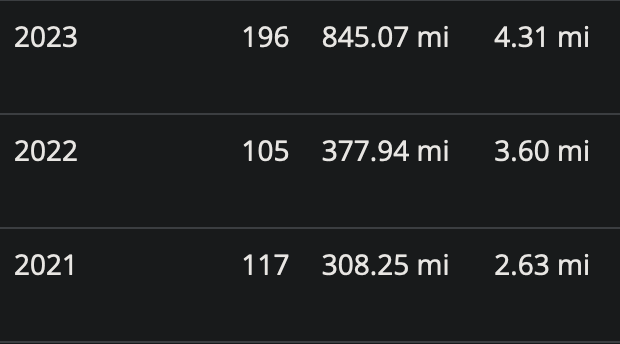

Where 2022 tried its hardest to kill me, 2023 merely put that killer instinct in neutral. A vast improvement to be sure, but it requires substantial context to fully appreciate.
Ok, maybe that’s not fair to 2023. It had some highs. It also had some lows. All told, 2023 was one of the most bimodal years in my recent memory, perhaps second only to 2020.
The Good
- Running (and health + fitness in general) was huge for both me and my wife in 2023. We both set annual running mileage records1 that outpaced the last couple years by massive margins.
- Burnout recovery was tangible. The difference is night and day. Even though I still have a long way to go, I can get through most typical weeks—even the occasional atypically strenuous week—without needing to aggressively power down.
- Related to the previous point, I set and held some boundaries, especially around work.
- I snagged myself a pretty sweet gig with PredxBio as their Principal AI/ML Scientist, starting January 2024. It’s technically a sabbatical (I’ll post about this later in more detail), but I’m really excited for the change.
- I’ve picked up a few at-home side projects that I’m really enjoying. This culminated in a
#DecemberAdventureover on Mastodon that saw a lot of tinkering around building out a homelab. It’s still in the proof-of-concept stages but I’m really having fun with it! - My wife and I downloaded, played through, and beat Tears of the Kingdom. It was pretty much the opposite of this, but just as beautiful.
I cannot underscore enough how groundbreaking it was for us to find a stride2 with our running and general activity levels.

My own health improved dramatically over the course of the year (especially after being kicked while down by getting COVID on the evening of December 31, 2022): not only did my labs empirically show this improvement at my end-of-year physical, but my two half marathons this year were separated by 6 months (April and October) and by 20 minutes (2:31 in April, 2:12 in October). Both still technically rank among my slowest half marathon finishing times, but the trend is so, so encouraging.
My burnout has also improved dramatically. Where I could barely make it through a work week in 2022, this past year—through careful planning, tracking of my activity and burnout levels, and changing course as needed—I could maintain relatively normal levels of work intensity, while still protecting time for things I needed and wanted (workouts, hobbies, socializing, sleeping).
Part of this burnout management culminated in seeking out an opportunity with PredxBio, a Pittsburgh-based startup in spatial biology. I started with them just this past Tuesday, and I’m thrilled to see where this change of pace takes me.
The Bad
- Despite my burnout recovery, I still had some weeks that fried me so badly I needed to clear my schedule to power down. Not often, but more than zero.
- I can’t recall a time when I’ve muted, unfollowed, or blocked more people than after October 7. The sudden influx of middle east geopolitical “expertise” was unreal.
- My frustration levels with professionals and their uncritical embrace of hype around AI are high. I’ll be the first to admit: AI does cool stuff, but putting everything else aside to build AI into our workflows without acknowledging its real, myriad weaknesses is really disheartening.
I submitted a large grant application in late September, and three days later submitted a smaller seed grant application. This was one example of a week where I pushed myself too hard and needed an acute and immediate recovery period. Another example was mid-November: I was in charge of organizing and MCing a panel on “AI in Higher Education” at my department’s annual “Research Day”, and it just happened to coincide with several instructional milestones that same week. In both cases, I needed to clear my schedule for a couple days. I’m fortunate to be able to do that, but I was also completely non-functional those days.
Speaking of the seed grant: I heard back only weeks ago that our application was denied. Certainly not an unlikely outcome, but what really frustrated me was the following:
Due to the volume of proposals, reviewers were not asked to prepare written critiques.
This is one of my biggest critiques of the academic system on a whole3: feedback either isn’t given, or it’s given too late to use, or—at its most destructive—it’s actively misleading.
The Ugly
- We started the year with COVID. I got the “long” version.
- While burnout recovery has improved my overall bandwidth, it’s made room for long-simmering and unresolved resentment, frustration, and anger around a variety of things. This needlessly consumed a lot of spare cycles and left me run down.
- Everything happening in the middle east since early October.
- Nihilism crept in this year. This toot helped point it out to me, but charting a path out is proving difficult.
After almost three years of avoiding COVID, my wife and I caught it just before leaving a holiday family reunion in Arizona (though didn’t show symptoms until days after returning home). Our infections were both relatively “minor”—the medical term, though I had a fever hovering just below 102F and she had the worst congestion of her life—but even after I tested negative (it took me almost two weeks to fully clear it), I developed new and lingering respiratory symptoms I’d never had previously. These symptoms lasted for months, nearly into the summer, and included exercise-induced asthma: I would start every run feeling like I was drowning. For the first 20 minutes of a run, my lungs wouldn’t open; I’d feel like I had an elephant sitting on my chest. Eventually my lungs would open, but I’d often be exhausted by that point, making my return to running very slow and very frustrating. Even now, a year later, I still deal with occasional symptoms, though they have thankfully substantially decreased in intensity and frequency.
I’ve also noticed that my brain has spent a lot more time (and energy) spinning on people who and events that have left me angry or otherwise upset. This has always been a weakness of mine and a regular point of discussion and focused work with my therapists over the years, but in 2023 it got a lot worse.
Resentment was a big problem, especially since I’ve no way of knowing whether the resentment came from something real or because my brain connected disparate events in a way that was completely fictitious.
Combined with real-world events, an impending US Presidential elections with massive implications, and ongoing ambivalence or outright antipathy toward any kind of COVID countermeasures (despite the current wave that is second only to the massive Omicron wave of late 2021), real nihilism crept in. What kind of world am I raising our daughter in? What kind of world am I handing off to her? What can I possibly do to change any of this? Reading Amy Ko’s hopes for 2024 helped, as did the numerous reminders to “think global, act local”.
Plans for 2024
I gave up on resolutions years ago, but I still set goals and make plans for achieving those goals. I also try to prioritize and set my goals up for success.
My biggest priority this year, I think, is to tackle the lingering resentment and default-to-anger. It drained me so needlessly last year, and there’s never going to be any shortage of things and people to be outraged about / at. I’ve seen a lot of memes with pithy reframings, and while I think those are valuable, they don’t quite hit the mark for me; “consider if a person is worth your anger” still feels too antagonistic, too “me-vs-them.”
Instead—and in line with what we teach our daughter!—I want to allow myself space to feel and observe these reactions, and then to inspect and interrogate them. This not only refocuses on me outside of a combative context, but also forges new neural pathways to make this process second-nature.
My other plans, in no particular order:
- 1000+ miles running (will probably write about this on my running blog soon-ish)
- Reorganize my upstairs office, complete with a home server rack to consolidate hardware
- Donate donate donate! (there is SO MUCH STUFF around the house we just don’t use)
- Set and hold boundaries, especially around work, but also around family and friends
There are other smaller items in there too—I’ve learned a lot more about kubernetes networking and foresee an overhaul of my cluster configuration in the near future; I’m also toying with some yard improvement ideas to try and improve the drainage; and I cannot underscore how much I want to clear out the garage, since it’s about 1/3 full of stuff we literally never touch and most likely never will again—but those are on more of a “as time and energy allow” basis.
I wish everyone a wonderful 2024.
Footnotes
Post-COVID lockdown mileage records. My insane all-time annual record set in 2014 still stands. For now.↩︎
What can I say? The past few years have been a marathon.↩︎
I have an entire draft written about my issues with academia at the institutional, state, and local levels, but I don’t know when, or even if, I’ll post it; if you want to talk about it though, I’m happy to.↩︎
Citation
@online{quinn2024,
author = {Quinn, Shannon},
title = {2023: {A} Year of Extremes},
date = {2024-01-05},
url = {https://magsol.github.io/2024-01-05-a-year-of-extremes},
langid = {en}
}